Right now, above the traffic, something is flying through New York that you cannot hear.
New York has nine bat species. Every one eats insects, and six of them spend winter hibernating in caves and mines.
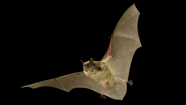
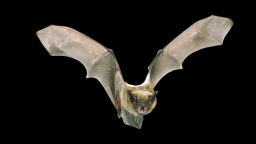
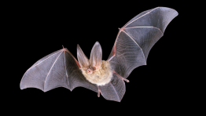
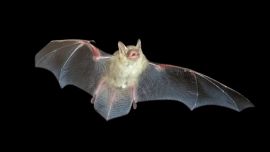
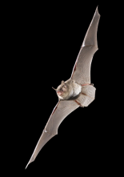
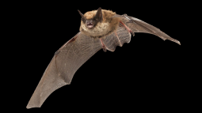
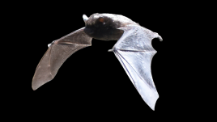
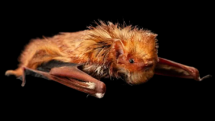
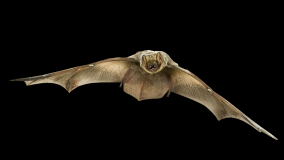
Bats of NY, Department of Environmental Conservation
They hunt by sound. Their calls run at roughly 20 to 60 kHz, far above the 20,000 Hz ceiling of human hearing. We share the city with them and hear none of it.
WCS/Fordham ‘Bats in the Bronx’ study
Gotham Bat Conservancy has recorded little brown, tricolored and northern long-eared bats in city parks, with endangered or threatened species in all five boroughs.
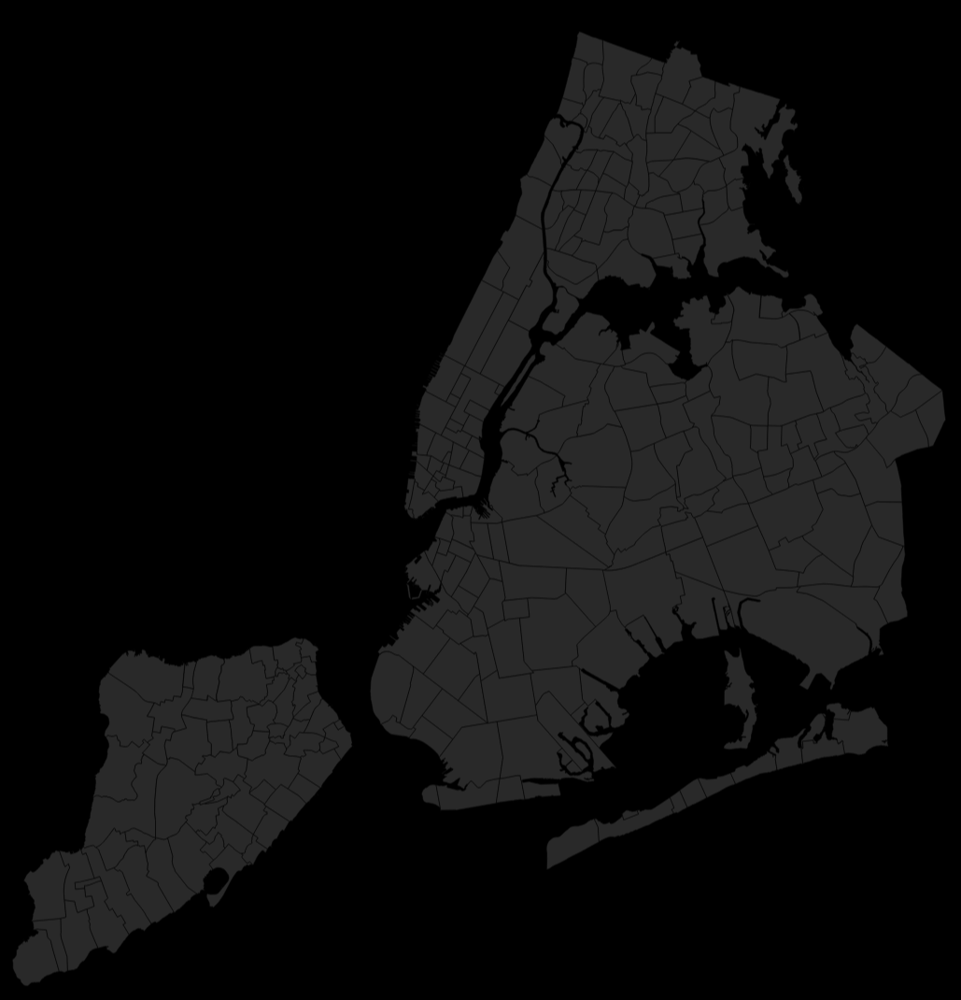
Gotham Bat Conservancy 2024; Urban Bat Project NYC; iNaturalist export; NYC 311 DEP noise.
Public sightings tells a simpler story with 306 bat observations on iNaturalist against 17 sonic detections in 11 parks. Bats are present in far more places than people notice.
iNaturalist export, all bats, New York State
That night is loud. New Yorkers filed over 738,000 noise complaints in a single year, more than 2,000 a day, and the city never fully darkens. Researchers now track noise and lighting as factors that shape where bats fly.
NYC Open Data 311, Noise Complaints
When New Yorkers call Urban Park Rangers about an animal, bats make up 1% of the reports.
NYC Open Data, Urban Park Ranger Animal Condition Response
Raccoons, Canada Goose, Dog, Cat, Eastern Gray Squirrel fill the list. Bats are a sliver of it, but a sliver can mean few bats, or few people who notice them.
NYC Open Data, Urban Park Ranger Animal Condition Response
Of 96 bat reports, 38 were healthy and 21 injured, the others were unhealthy, DOA or not recorded.
NYC Open Data, Urban Park Ranger Animal Condition Response
Part of the answer is old fear. Here are the stories we tell about bats, and what is documented.
MYTH TRUTH“Blind as a bat.”
Bats can see. Some can even see ultraviolet light. They use echolocation up close and their eyes for big-picture navigation (UC Davis)
“They fly into your hair.”
They’re chasing insects near your head. Echolocation can pick out prey as small as gnats (UC Davis).
“Vampire.”
All nine New York bats eat insects. Blood-feeding bats live in Latin America.
“All bats have rabies.”
Just over 3% of bats sent for testing in New York in 2014-2023 had rabies (NY Department of Health). That’s higher than the rate in wild bats overall, because sick or bitten bats are the ones that get tested.
“Flying mice.”
Bats aren’t rodents. Most North American bats have one pup a year (UC Davis).
In 2006 white-nose syndrome reached New York. Since then the tricolored bat has lost 98 percent of its state population, the little brown bat 91 percent, and the northern long-eared bat is down to about one percent of what it was.
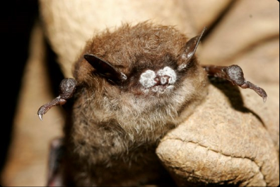
Little brown bats have leveled off after the crash, but a rebound will take decades. Females have one or two pups a year.
There is still no cure for white-nose syndrome, and the tricolored bat has been proposed for the federal endangered list.
NYSDEC
Little brown bats have leveled off after the crash, but a rebound will take decades. Females have one or two pups a year. There is still no cure for white-nose syndrome, and the tricolored bat has been proposed for the federal endangered list. The bats are still here. The question is whether we notice.
The bats are still here. The question is whether we notice.